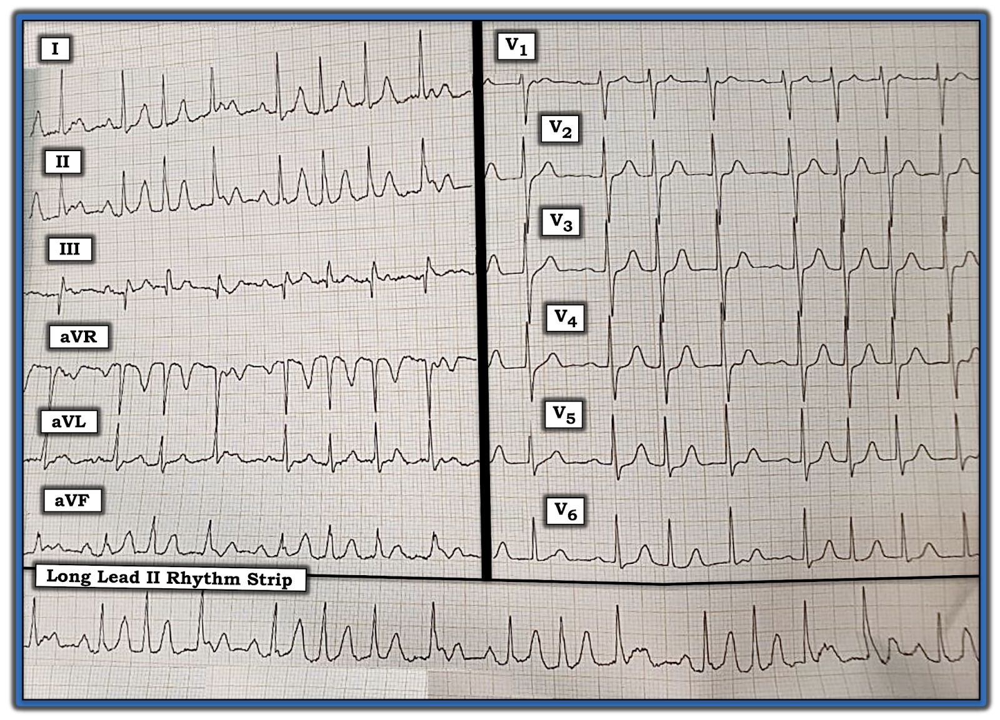
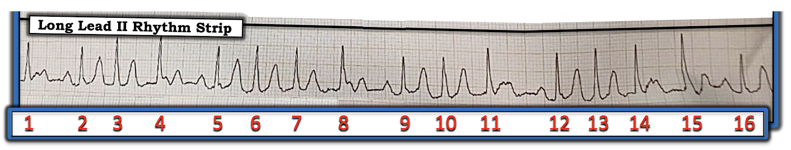
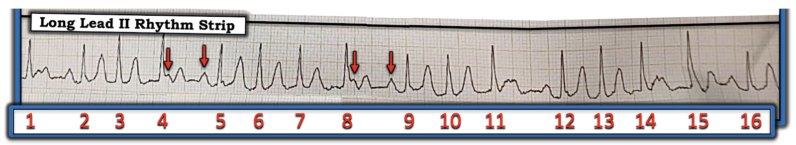
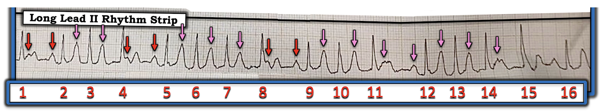
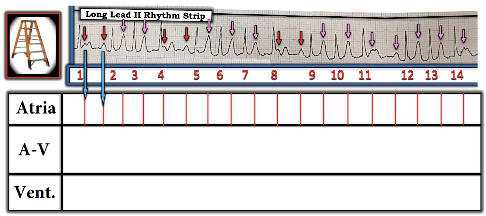
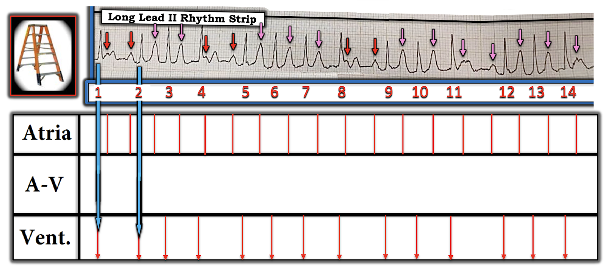
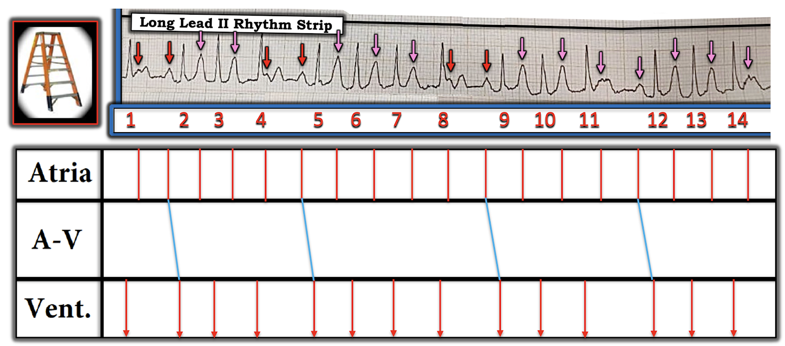
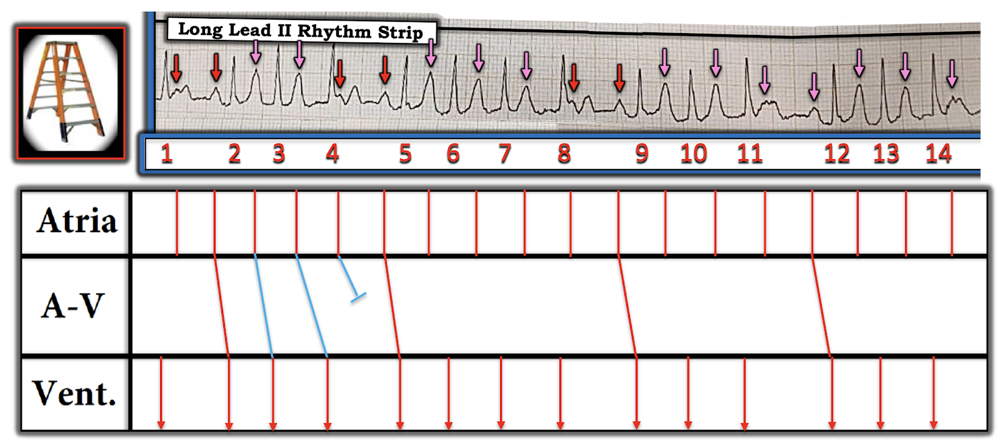
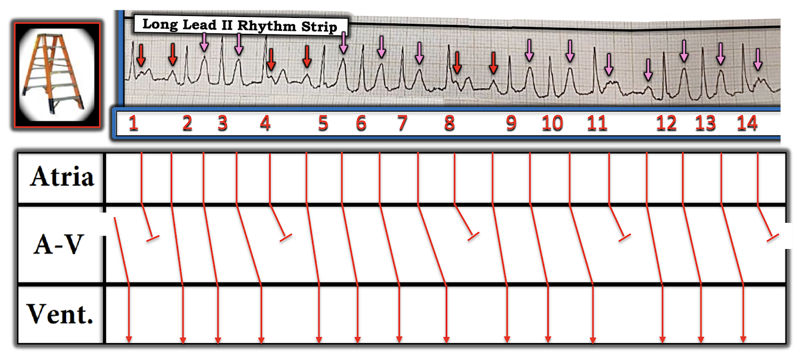

ECG Blog #261 (51a) — Có bao nhiêu sóng P?
Điện tâm đồ 12 chuyển đạo và dải nhịp chuyển đạo II dài trong Hình-1 được ghi từ một người đàn ông trung niên đến khám vì khó thở. Dù vậy — ông ổn định huyết động (hemodynamically stable) vào thời điểm ghi bản ghi này.
- Đây là nhịp gì? — Bạn có chắc không?
- Có bao nhiêu sóng P?


=======================================
LƯU Ý #1: Đến đây, một số độc giả có thể muốn nghe ECG Audio PEARL dài 7:40 phút trước khi đọc Suy nghĩ của tôi về điện tâm đồ trong Hình-1. Bạn có thể xem Suy nghĩ của tôi về bản ghi này vào bất kỳ lúc nào (nằm bên dưới ECG MP-51a).
=======================================

Hôm nay ECG Media PEARL #51a (7:40 phút Audio) — Ôn lại "Một số bước đơn giản giúp đọc các nhịp phức tạp" ).
==================================
LƯU Ý #2: Như tôi sẽ trình bày bên dưới — chú ý tới các bước đơn giản được ôn lại trong Audio Pearl ở trên đã giúp tôi chẩn đoán nhịp này trong chưa đến 15 giây.
==================================
Suy nghĩ tuần tự của tôi khi đọc bản ghi này:
Như mọi khi — tôi bắt đầu cách tiếp cận hệ thống với nhịp bằng cách đánh giá Ps, Qs và 3Rs (như đã bàn chi tiết trong ECG Blog #185).
- Chúng ta được biết rằng dù "khó thở" — bệnh nhân trong ca hôm nay vẫn ổn định huyết động. Vì vậy — chúng ta có "điều kiện xa xỉ" là có một chút thời gian để xác định nhịp.
- Khi áp dụng hệ thống Ps, Qs, 3R — Bạn không cần đi theo thứ tự. Vì vậy, trong ca hôm nay — tôi nhìn trước tiên vào độ rộng QRS. Việc QRS rõ ràng hẹp ở cả 12 chuyển đạo cho chúng ta biết nhịp này là trên thất (SupraVentricular)!
- Nhịp rõ ràng là nhanh, nhưng không Regular (đều). Do đó, Rate (tần số) của nhịp thất sẽ thay đổi — nhưng có vẻ ở một số đoạn của bản ghi, tần số đạt ~120-130/phút.
- Trong cách tiếp cận hệ thống nhanh để đọc nhịp của tôi — khi nhịp không đều, tôi thích dành vài giây để "lùi lại" một chút khỏi bản ghi nhằm quan sát XEM nhịp có một "khuôn mẫu" lặp lại hay không. Trên dải nhịp chuyển đạo II dài trong Hình-1 — tôi thấy nhịp theo nhóm (Group Beating) (tức là các nhóm 3 hoặc 4 nhát — mỗi nhóm cách nhau bởi một khoảng ngưng ngắn có thời gian xấp xỉ như nhau).
==================================
LƯU Ý #3: Dù bản ghi hôm nay có thiếu sót kỹ thuật (tức là nhiễu đường nền ở một số chuyển đạo — cùng với độ nghiêng đáng kể, và do đó làm sai lệch các phép đo) — tôi cho rằng bản ghi này vẫn đủ để diễn giải.
==================================
Tiếp tục với cách tiếp cận Ps, Qs & 3R trên dải nhịp chuyển đạo II dài (Hình-2):
- Sóng P có hiện diện! — dù ban đầu tôi không nhận ra được một nhịp nhĩ đều. Nhưng khi nhìn phía trước từng phức bộ QRS kết thúc mỗi khoảng ngưng ngắn (tức là phía trước các nhát #2, 5, 9, 12 và 16 trong Hình-2) — có một sóng P dương với khoảng PR giống nhau! Vì vậy — ít nhất một số sóng P có Related (liên quan) với các phức bộ QRS lân cận!
- ĐIỂM THEN CHỐT (PEARL) #1: Hình ảnh nhịp theo nhóm trong một nhịp SVT, trong đó mỗi khoảng ngưng tương đối có thời gian xấp xỉ bằng nhau và đi trước bởi một sóng P có cùng khoảng PR — thường nhất là hậu quả của dẫn truyền Wenckebach. Nhờ biết điểm then chốt này mà tôi thực sự đã nghi ngờ Wenckebach AV chỉ trong vài giây khi nhìn bản ghi này.
- ĐIỂM THEN CHỐT (PEARL) #2: Một trong những nguyên nhân thường gặp nhất của Wenckebach AV, nhất là khi tần số nhĩ nhanh — là nhồi máu cơ tim (MI) thành dưới cấp (Xem ECG Blog #55 — Blog #154 — Blog #168 — Blog #224). Vì vậy — tôi luôn cân nhắc khả năng này với những nhịp như nhịp thấy trong Hình-2. Dù vậy — nhìn nhanh tổng thể bản ghi 12 chuyển đạo trong Hình-1 không gợi ý thay đổi cấp tính. Sóng Q đơn độc ở chuyển đạo III không có giá trị chẩn đoán — và bệnh nhân trung niên này không bị đau ngực. Do đó, tôi nghi ngờ một rối loạn nhịp nguyên phát, hơn là một nguyên nhân thiếu máu cục bộ gây ra nhịp nhanh.


ĐIỂM THEN CHỐT (PEARL) #3: Để có Wenckebach AV — phải có một nhịp nhĩ nền đều. Việc dùng compa đo (calipers) đã giúp tôi xác nhận điều này chỉ trong vài giây (Hình-3):
- Khi sóng P đều không rõ ngay từ đầu — cách tôi tìm chúng là tìm một hoặc nhiều chỗ trên bản ghi mà tôi chắc chắn thấy bằng chứng của ít nhất 2 sóng P liên tiếp (các mũi tên ĐỎ trong Hình-3).


Dùng khoảng P-P xác định từ các mũi tên ĐỎ liên tiếp trong Hình-3 — tôi đã "dò bước" bằng compa để thấy dấu hiệu của sóng P đều suốt dải nhịp chuyển đạo II dài (các mũi tên HỒNG trong Hình-4).
- Bằng chứng ủng hộ rằng các MŨI TÊN trong Hình-4 thực sự biểu thị sự xuất hiện của các sóng P đều suốt bản ghi này — đến từ phần nhọn thêm thấy ở sóng T của các nhát #2,3 — 5,6,7 — 9,10 — và 12,13. Ngược lại, không có phần nhọn như vậy ở sóng T của các nhát #1, 4, 8, 11 và 14, vì sóng P không trùng với sóng T ở những nhát này. Với biên độ cao và dạng nhọn của những sóng P mà ta thấy rõ (tức là các sóng P trước các nhát #2, 5 và 9) — dễ hình dung các sóng P xuất hiện cùng lúc với sóng T sẽ tạo ra "phần nhọn thêm" trên bản ghi này.


Tổng Hợp Lại Tất cả: Một trong những "điều cần nhớ" từ bản ghi hôm nay là việc áp dụng một loạt các Bước Đơn giản được nêu bật trong Audio Pearl hôm nay đã giúp tôi hoàn tất phần đánh giá trên trong ~15 giây. Tôi đi đến kết luận sau:
- Nhịp nền trong ca hôm nay là nhịp nhanh nhĩ (ATach) với tần số ~130-140/phút (các mũi tên ĐỎ và HỒNG xuất hiện đều đặn trong Hình-4).
- "Điều thường gặp thì hay gặp" — và ATach thường đi kèm dẫn truyền Wenckebach. Nhận ra nhịp theo nhóm khiến tôi lập tức nghi ngờ dẫn truyền Wenckebach trong ca hôm nay — và điều này được ủng hộ bởi hình ảnh một khoảng PR hằng định lặp lại ở cuối mỗi khoảng ngưng tương đối (tức là khoảng PR hằng định trước các nhát #2, 5, 9, 12 và 16).
- Việc dùng compa đo đã giúp tôi xác nhận nhịp nhĩ đều.
- Dẫn truyền Wenckebach có thể được xác nhận bằng mắt qua sự tăng dần của khoảng PR trong mỗi nhóm nhát — cho đến khi một nhát bị rớt (tức là các sóng P xuất hiện ngay sau phức bộ QRS của các nhát #1, 4, 8, 11 không được dẫn truyền). Chu kỳ kế tiếp sau đó bắt đầu với khoảng PR ngắn lại (tức là trước các nhát #2, 5, 9 và 12).
- Dù nhồi máu thành dưới là nguyên nhân thường gặp của nhịp theo nhóm kèm Wenckebach — không có gợi ý nào về nhồi máu mới trên điện tâm đồ 12 chuyển đạo hôm nay. Nhiều khả năng NẾU ATach được kiểm soát — thì dẫn truyền Wenckebach sẽ hết.
GIẢN ĐỒ BẬC THANG (LADDERGRAM):
Để làm rõ cơ chế của nhịp hôm nay — tôi đã vẽ một giản đồ bậc thang (laddergram) kèm chú thích từng bước. Tôi bắt đầu với Hình-5.
- LƯU Ý: Để ôn lại những điều cơ bản về CÁCH đọc (và vẽ) giản đồ bậc thang — Xem ECG Blog #188).










ĐIỂM CUỐI CÙNG: Thay vì gọi nhịp trong Hình-9 là một dạng "blốc" AV độ 2 nào đó — tôi thiên về xem nhịp này là nhịp nhanh nhĩ kèm dẫn truyền Wenckebach. Kiểu dẫn truyền Wenckebach này thường là sinh lý, do tần số nhĩ nhanh. Nó thường không biểu thị một khiếm khuyết dẫn truyền cụ thể — và dẫn truyền Wenckebach thường sẽ hết nếu ATach được kiểm soát.
==================================
LỜI CẢM ƠN: Tôi xin cảm ơn Pisey Chantha và Phearo Pheap (từ Phnom Penh, Campuchia) đã chia sẻ ca bệnh và các bản ghi này.
==================================
Các bài ECG liên quan đến ca hôm nay:
- ECG Blog #185 — Sử dụng Cách tiếp cận hệ thống để đọc nhịp.
- ECG Blog #55 — MI thành dưới cấp + Wenckebach AV.
- ECG Blog #154 — MI thành dưới cấp + Wenckebach AV.
- ECG Blog #168 — MI thành dưới cấp + blốc Wenckebach (hai tầng).
- ECG Blog #224 — MI thành dưới cấp + Wenckebach AV.
- ECG Blog #188 — Cách đọc (và vẽ) Giản đồ bậc thang.